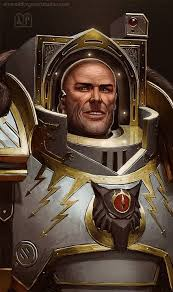

Horus Lupercal
O senhor da XVI Legião (Luna Wolves, depois Sons of Horus) e o arquiteto da maior guerra civil da humanidade. Horus Lupercal não era apenas um Primarca; ele era o "Primeiro entre Iguais", o filho favorito do Imperador e aquele que quase destruiu o sonho da humanidade.
Quem foi Horus?
Horus foi o primeiro Primarca a ser reencontrado pelo Imperador, no mundo de Cthonia. Por ter passado mais tempo com seu pai do que qualquer outro irmão, ele desenvolveu um vínculo único. Horus era o reflexo das maiores ambições do Imperador: carismático, brilhante e um líder nato. Cthonia era um mundo de gangues e mineração, o que deu a Horus uma compreensão pragmática da brutalidade e da lealdade. Ele lutou ao lado do Imperador por décadas, servindo como seu braço direito na Grande Cruzada.
Características e Personalidade
O Diplomata de Ouro: Ele possuía um carisma quase sobrenatural. Horus conseguia convencer planetas inteiros a se renderem apenas com palavras, e sabia exatamente como lidar com as personalidades difíceis de cada um de seus irmãos.
O Mestre da Estratégia: Sua tática favorita era o "Speartip" (Ponta de Lança), um ataque focado diretamente no coração do inimigo para decapitar o comando adversário e encerrar a guerra rapidamente.
Ambição e Traição: Sua maior virtude tornou-se sua queda. O desejo de ser reconhecido e o medo de que o Imperador estivesse abandonando seus filhos foram as brechas que o Caos usou para corrompê-lo.
Grandes Feitos
O Warmaster Quando o Imperador se retirou para a Terra, ele nomeou Horus como comandante supremo de todas as forças imperiais. Isso gerou orgulho, mas também o peso esmagador da responsabilidade.
O Triunfo de Ullanor: A maior vitória da Grande Cruzada. Horus liderou o ataque contra o império Ork do Overlord Urrlak Urg. Foi após essa batalha monumental que o Imperador o nomeou Warmaster, o auge da carreira de Horus antes da queda.
A Corrupção em Davin: Após ser ferido por uma lâmina amaldiçoada em Davin, Horus foi levado a um templo de cura que era, na verdade, um culto ao Caos. Lá, ele teve visões (distorcidas pelos deuses do Caos) de um futuro onde o Imperador era adorado como um deus e os Primarcas eram esquecidos. Acreditando estar salvando o Império, ele se voltou contra o pai.
A Heresia de Horus: Ele orquestrou a queda de metade das Legiões de Space Marines. Com uma mente tática sem igual, ele dividiu o Império e liderou o avanço até a Terra. Sob sua liderança, os traidores transformaram a galáxia em um mar de sangue, culminando no cerco ao Palácio Imperial.
O Duelo Final: No auge do Cerco de Terra, a bordo de sua nave capitânia, a Vengeful Spirit, Horus enfrentou o Imperador. Embora Horus possuísse o poder dos quatro Deuses do Caos combinados, o Imperador conseguiu desferir um golpe psíquico final que não apenas matou o corpo de Horus, mas apagou sua alma da existência, garantindo que ele nunca pudesse ser ressuscitado.
Atualmente: Apesar de estar morto, sua figura ainda é demonizada pelo império, sempre evitando sua referência.
Estilo de Combate
- Combate brutal e dominante
- Uso da Garra do Warmaster